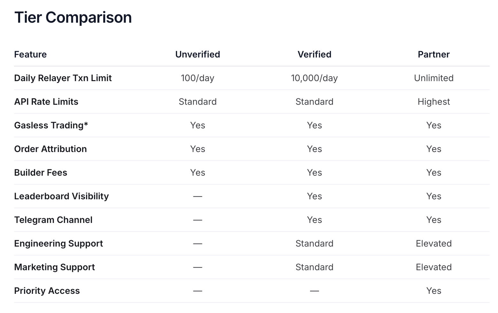
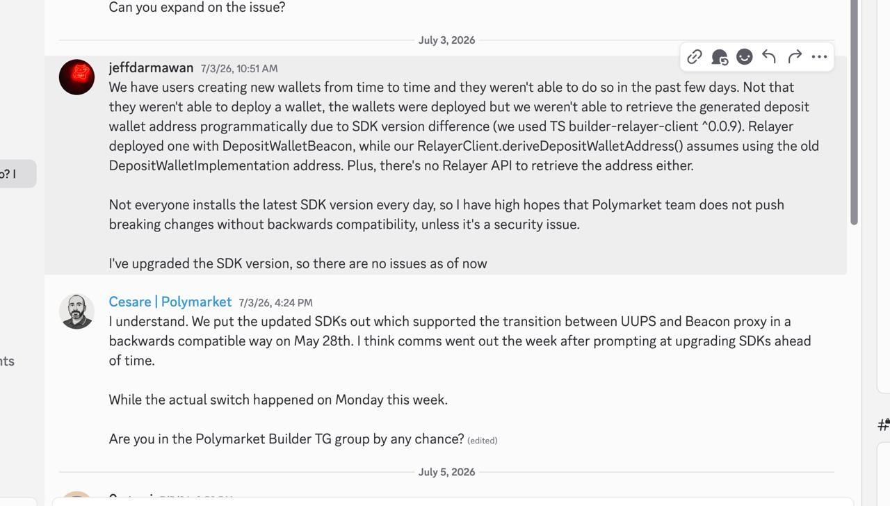
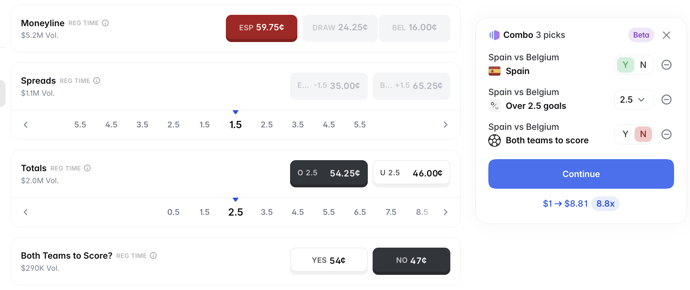
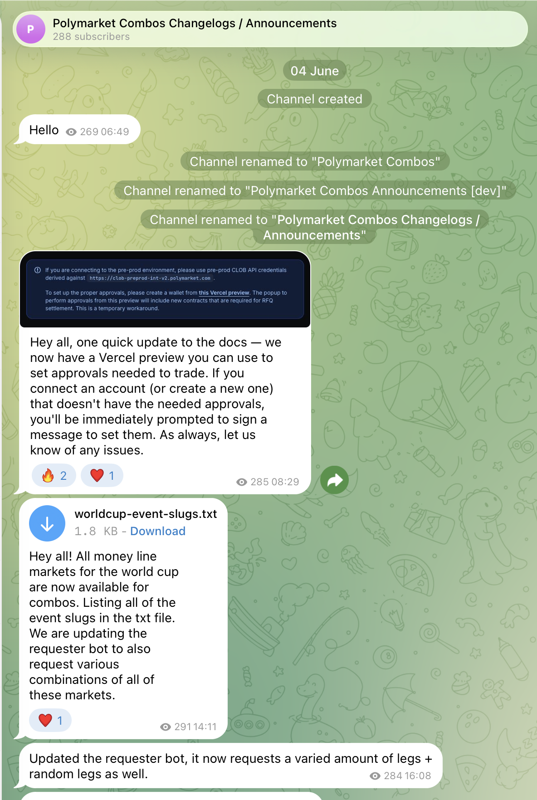

Crypto projects today generally choose Privy.io or Turnkey as their wallet-infrastructure provider. These services integrate registration and login through conventional methods such as email and Google, as well as Web3 methods such as MetaMask or OKX Wallet. More importantly, they solve wallet-security problems by creating embedded wallets for users. Without them, a project must store users’ private keys on its own servers, which is dangerous and imposes a heavy security burden, especially on small and medium-sized teams. Privy and Turnkey hold the private keys in encrypted hardware such as TEEs, while the project accesses and uses the wallets through APIs.
As for choosing between Privy and Turnkey, projects we often examine—including Kreo, PolyCop, and polymtrade—use Privy. They appear on the Polymarket Builder leaderboard, which ranks every project in the Polymarket ecosystem by trading volume. GMGN also uses Privy.
Some projects use Turnkey, including Axiom and Alchemy. We used Turnkey. We initially chose it because its positioning is friendlier to automated trading bots, whereas Privy depends heavily on frontend UI SDKs. Later, we found another major difference: support for Telegram login.
Privy supports Telegram login; Turnkey does not. Why?
Telegram lacks a mature OAuth system like Google’s, so a Telegram account cannot provide Privy or Turnkey with an identity provider in the way an email address or wallet can. Privy simplifies this case: after you log in with Telegram, Privy makes wallet API requests on your behalf. Privy’s backend effectively “is you.” If its servers are compromised, the attacker gains complete wallet authority. Turnkey is more rigid: without an identity provider it will not let you operate the wallet, because its backend refuses to assume that authorization risk for the user.
This is a major difference in scenario support. To use Turnkey while supporting Telegram login, you must build a dedicated Telegram Mini App and invoke it during login.
Polymarket’s order system is called CLOB, and actions such as placing orders interact with its API. On April 28, Polymarket officially enabled CLOB V2. For downstream projects like ours, the largest change was replacing contract addresses. Copy Trading, for example, scans on-chain transactions; it previously monitored V1 contracts and had to monitor V2 contracts after migration. A downstream project could also avoid adapting because the old order parameters remained broadly compatible.
CLOB V2 also introduced parameters such as FAK and FOK for market orders. I did not discover their differences until more than a month later. Under V1, the unfilled portion of an order that did not execute immediately was automatically posted as a limit order, while limit orders also required more than five shares. Users therefore encountered strange errors: why did an order require at least five shares, while sometimes the minimum order amount was one dollar? Why did an order sometimes succeed and sometimes fail if the minimum was not fixed? Using FAK avoids this old problem.
On May 4, Polymarket announced a new Deposit Wallet, replacing the old Safe wallet. This was a breaking change. Existing users remained compatible, but new wallets—especially API-operated wallets—would use Deposit Wallet, so downstream projects had to adapt.
The timing was delicate because our planned beta launch was May 5. I rushed for two or three consecutive days to adapt to the migration. It was not particularly difficult, but the surprise and launch delay created some pressure.
The only setback was that Polymarket’s migration documentation omitted the new Deposit Wallet implementation address. Creating a wallet through the factory requires an implementation contract parameter, and different implementations produce completely different wallet addresses. The key was not merely which address we used, but which one Polymarket’s Relayer API used, because all wallet operations under the new Deposit Wallet model passed through the official Relayer API. With the old Safe wallet, we could call the on-chain contracts ourselves. This change made the wallet system less decentralized. The correct implementation value had to be read directly from Polymarket’s published SDK. Another pitfall was that different Polymarket SDKs—such as client-sdk and server-sdk, not merely different versions of one SDK—used different implementation addresses. Many developers in Discord encountered this integration problem.
The new Deposit Wallet must use Polymarket’s official Relayer API. After migrating, launching, and running an event, we immediately hit another pitfall: an Unverified Builder API had only 100 requests per day.

See Polymarket’s cunning? First it requires every new user to use Deposit Wallet. Deposit Wallet naturally requires the Relayer API. Then you discover that the API is rate-limited. The old Safe wallet could bypass Polymarket’s API quota by operating directly on-chain; now it cannot.
The Relayer API is used whenever a wallet is created and whenever money is withdrawn, so it is a high-frequency interface.
As a stopgap, Polymarket uses the Builder API to authorize the Relayer API by default, but the Relayer API does not require a particular Builder API. I registered ten accounts, created a Builder API for each, and configured them on the server to ease the quota temporarily. At 100 requests per account per day, ten accounts provided 1,000 daily requests. Verification took two to four weeks, a very long cycle.
We were eventually verified. Our project now appears on the Polymarket Builder leaderboard with Verified status.
On July 6, Deposit Wallet caused another problem. We discovered a serious bug: every user registered since July 1 had failed to create a wallet. Because few users reported it, we did not notice for several days. If a new user deposited after registering, the money went to the wrong address.
Why? On July 1, Polymarket directly changed wallet creation to use a beacon-based proxy wallet. It made no announcement and simply changed the API’s behavior, requiring downstream projects to adapt proactively.

We were also at fault because we failed to detect the anomaly promptly and did not add enough protective and defensive measures to the frontend and backend. We reimbursed every affected deposit. Fortunately, the amounts were small.

Polymarket introduced a feature called Combos for World Cup markets, so we evaluated integrating it. The Combos documentation showed that the API only allowed market makers to submit quotes; it provided no endpoint for ordinary users acting as takers to place orders.
Polymarket began operating the Combos interface on June 4 and appeared to be building it with considerable effort.

On July 10, a user reported a failed order. Investigation showed that the market’s tick size had changed: every World Cup market now supported a precision of 0.0025, or 0.25¢. Previously there were four fixed tick sizes; 0.25¢ was a fifth enum value.
Polymarket had launched this change on July 2, but we did not discover the bug until July 10.
As you can see, we have continuously followed Polymarket and responded to its feature updates and changes.
During development, we gradually recognized a project trap: building another official website.
If the positioning is “another official website,” the project becomes extremely passive. Polymarket is large and wealthy, its official UI is good, every feature appears there first, and orders are fast on its own servers. Ours can never be faster.
This is awkward. Objectively, making a better experience than the official site is extremely difficult. Polymarket is not a memecoin. Memecoins generally have no official website, wallet, or DEX, while Polymarket has an official site and official solutions. The Builder program was never positioned as an open decentralized protocol that invites everyone to build projects for fun.
On the contrary, Polymarket’s recent updates have become increasingly centralized. Its positioning resembles a centralized exchange such as Binance: the Polymarket API is the Binance API. Building in the Polymarket ecosystem is somewhat like building a Binance trading bot.